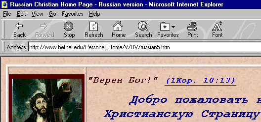

Page index / PC-MacRussian
Configuration Step Three
Configuration of Internet Explorer 3
Step Three
Now you should be able to view Russian on your Internet Explorer web browser.
However, if Russian is still not displayed, repeat the previous step and try to select "ER Kurier 1251" instead of "ER Kurier KOI-8" in the Font Settings. If this still does not work, please feel free to let me know.
Go to Configurations of Netscape Navigator 3